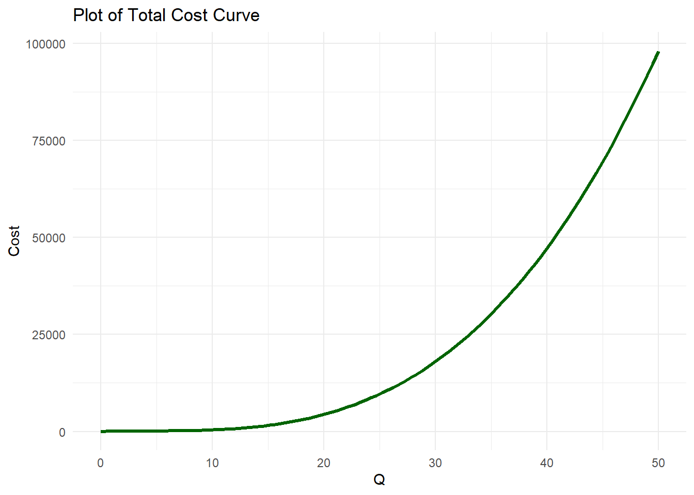
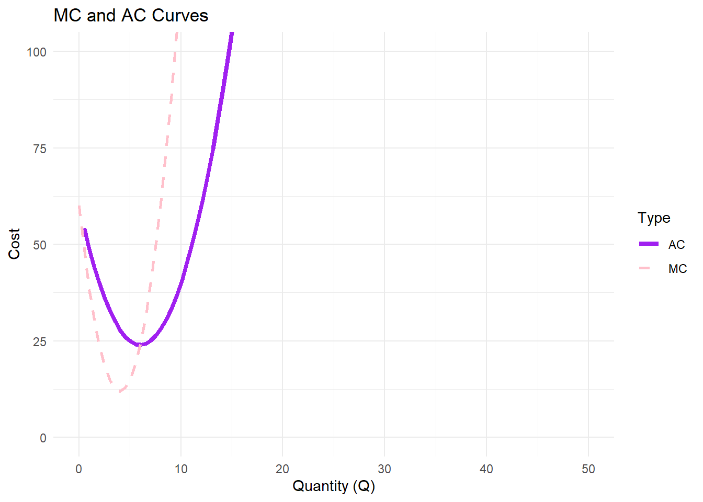
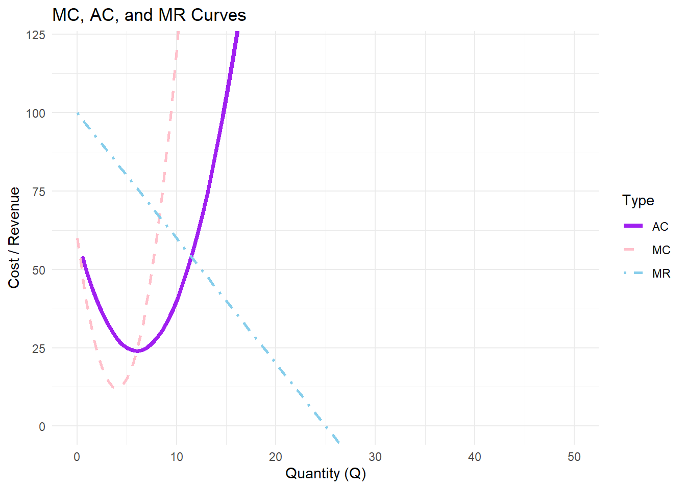
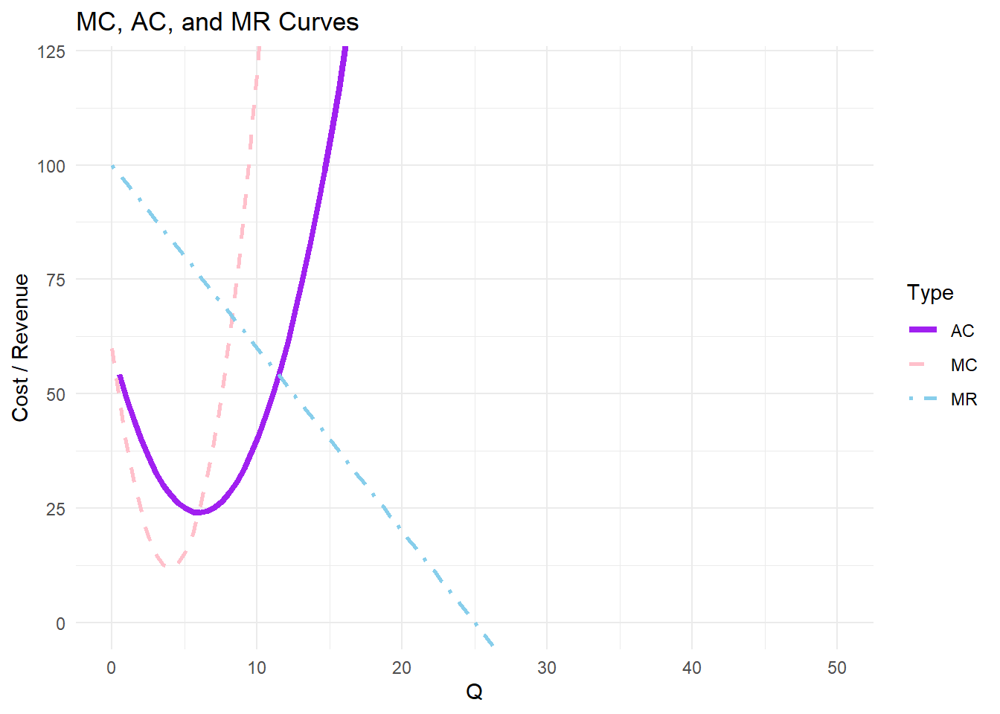

6 Review of Single-Variable Differentiation Rules and Visualizing Functions
6.1 Economic Example
We already discussed how to get Marginal Cost, etc. from the last chapter; here, we review how to get Marginal Cost, Average Cost.
6.1.1 Total Cost Function Definition
Say you are given a Total Cost function:
\(TC(Q) = Q^3 - 12Q^2 + 60Q\)
We can create a function of the Total Cost. This will help when we want to evaluate the model at a certain quantity.
What you are doing here is that you are creating a new object, TC. Then, function(Q) is defining the mathematical function (you are defining the Total Cost function). Q is the quantity.
6.1.2 Average Cost Function Definition
Then, you are now going to define the Average Cost function given as:
\(AC(Q) = \frac{TC(Q)}{Q}\)
We create the Average Cost function in R which will help us evaluate later on:
Once again, we are creating a new object, AC, then defining the average cost function function(Q).
6.1.3 Marginal Cost using Deriv
Unlike before where we used D(expression, name) , we will use the Deriv package. Therefore, install and load the Deriv package.
We know that the Marginal Cost function is:
\(MC(Q) = \frac{dTC}{dQ}\)
So, we use the Deriv package to get the first derivative of TC with respect to Q.
6.1.4 Evaluating at a specific quantity
We defined our functions, TC, AC, and MC. If you are given a specific quantity, what is the TC, AC, and MC? We can simply do this in R:
## [1] 4400## [1] 220## [1] 780You can double-check in the console by computing manually if the answers are correct. So, what we did is simply evaluate the functions at (Q=20)
6.2 Writing Greek Letters
In code, it is better to write the name of the Greek letter, however, when writing it in the final answer, that is the time you put it as the Greek Letter.
So, let’s say you are differentiating \[f(\gamma)=5\gamma^2\], this is how it should be done:
## 5 * (2 * gamma)Some usual Greek Letters:
| Greek Letter | R code in inline Math (Final Answer) | R code in code chunk |
|---|---|---|
| ⍺ | $\alpha$ | alpha |
| 𝛽 | $\beta$ | beta |
| 𝛾 | $\gamma$ | gamma |
| 𝛳 | $\theta$ | theta |
Example expression:
\(f(\gamma)=ln(\theta)+e^2+e^{ln(\gamma)}\)
For reference:
f(\gamma)=ln(\theta)+e2+e{ln(\gamma)}
In a code chunk, when you are defining:
log() = natural logarithm
exp() = exponential function
6.3 Square Roots and Powers
Say you have repeated square root:
\(\sqrt{\sqrt{\sqrt{\theta+1}}}\)
To write this in inline Math, it is this:
\sqrt{\sqrt{\sqrt{\theta+1}}}
Now, let us create a function. Given that the nested square roots would be complicated, we can simplify to have decimals as exponents:
## [1] 0.125We use Reduce to help us find out the equivalent exponent of nested square roots. Square root is simply \(expression^{1/2}\), then we simply say how many square roots are present. It’s 3 in this case. We can now write the function:
6.3.0.1 First Derivative
## function (theta)
## 0.125/(1 + theta)^0.875Now, if you want to change decimals to fractions, use the MASS package.
MASS::fractions(0.875) #:: because we are specifying that we are using fractions code in the MASS package. There are fractions that are from other packages so we need to specify## [1] 7/8## [1] 1/8Therefore, when writing the final answer:
\(f'(\theta)=\frac{1/8}{(1+\theta)^{7/8}}\)
f’(\theta)=\frac{1/8}{(1+\theta)^{7/8}}
6.3.0.2 Higher-Order (nth) Derivatives
So, our example would be:
\(f(x) = x^5 + x^4 + x^3 +x^2 + x +1\)
We define the function:
If you have R GUI that is 4.1.0 and later, we can change the word function to backslash as a shorter way. It works the same. ONLY do this if you have 4.1.0 and later.
We use the Deriv package:
## function (x)
## 120 * x + 24The nderiv is added and this is where you put whether you are getting the 4th derivative, 3rd, and so on.
Some answers have things like
.e1<-this is like a placeholder, you can substitute.e1with what comes after the arrow in your equations.
6.4 Visualizing Functions with ggplot2
6.4.1 Pre-plotting Check
In some cases, ggplot2 does not run. This can be brought by package mismatch, so, we need to double-check that everything is working properly.
user <- file.path(Sys.getenv("USERPROFILE"), "R", "win-library", "4.5")
dir.create(user, recursive = TRUE, showWarnings = FALSE)
.libPaths(c(user, .libPaths()))
ok <- tryCatch({
library(ggplot2)
ggplot(data.frame(x=1:5, y=rnorm(5)), aes(x,y)) + geom_point()
TRUE
}, error = function(e) FALSE)
if (!ok) {
install.packages("rlang", lib = user_lib)
ok <- tryCatch({
library(ggplot2)
ggplot(data.frame(x=1:5, y=rnorm(5)), aes(x,y)) + geom_point()
TRUE
}, error = function(e) FALSE)
}
if (!ok) plot(1:5, rnorm(5))If it is not working, we will use Base R, so go to Base R.
6.4.2 1. Plotting a Single Function
We load the ggplot2 package to make plots.
6.4.2.0.2 b. Create values for Q
We create a sequence of numbers using seq(), 0, 50 the start and end of the sequence while length.out=100 creates 100 numbers evenly spaced between 0 and 50. If you have more points with the length.out the curve will be smoother when we do the plotting.
6.4.2.0.3 c. Create data frame for plotting
data.frame() creates the table of data
Q=Q_vals is the column that is created. We store all the quantities (from 0 to 50)
TC = TC(Q_vals) is the column for TC storing the total cost for each Q.
6.4.2.0.4 d. Plotting the curve
You might get worried because there are warnings that will appear, however, those are not really worrisome. If you do not want to be stressed, you can remove the warnings. You can do that by adding in the code chunk where you can see {r}, {r, warning=FALSE}.
library(ggplot2)
p1<-ggplot(df_tc,
aes(x = Q,
y = TC)) +
geom_line(size = 1.2, color = "darkgreen")+
labs(title = "Plot of Total Cost Curve", x = "Q", y= "Cost")+
theme_minimal()
print(p1)
i. ggplot(df_tc, aes(x = Q, y = TC))
This starts the plot using the
df_tcwe created as the data.aes(x = Q, y = TC)tells R that you are puttingQon the x-axis andTCon the y-axis
ii. geom_line(size = 1.2, color = "darkgreen")
This draws our line connecting all points (Q, TC)
size = 1.2means thicker line than the default of 1.color = "darkgreen"is the line color. You can experiment. So, if the color you want will not appear, ggplot does not have it.
iii. labs(title = "Plot of TC", x = "Q", y = "Cost")
- This adds labels like the title and axis names
iv. theme_minimal()
- Makes the plot cleaner and simpler, with less clutter.
6.4.2.1 Base R Plotting
options(scipen = 999)
p1.1<-plot(df_tc$Q, df_tc$TC, type = "l", col = "darkgreen", lwd = 2,
main = "Plot of Total Cost Curve",
xlab = "Q",
ylab = "Cost"
)
## NULLi. options (scipen=999) is added because unlike ggplot2, Base R tends to use scientific notation. It does not look that nice, so, to avoid that, add this.
ii. plot(df_tc$Q, df_tc$TC) portion is the aes portion in ggplot2.
type = "l", col = "darkgreen", lwd = 2so this makes the plot a line graph, color is dark green and the line width is thicker,The other parts are the labels.
6.4.3 2. Multiple Functions in One Plot (MC and AC)
We already have our MC and AC functions. We also have Q_vals too.
6.4.3.0.2 b. Prepare the data in long format for ggplot
ggplot2 prefers long format which looks like this:
| Q | Value | Type |
|---|---|---|
| 0 | 10 | MC |
| 0.1 | 12 | MC |
| … | … | MC |
| 0 | 15 | AC |
| 0.1 | 14 | AC |
| … | … | AC |
dfc<-data.frame(
Q = rep(Q_vals, 2),
Value = c(MC(Q_vals), AC(Q_vals)),
Type = rep(c("MC", "AC"), each = length(Q_vals))
)rep(Q_vals, 2)repeat Q for both curvesValueis so that MC and AC values are stackedTypetellsggplotwhich line is which
6.4.3.0.3 c. Plotting AC and MC
library(ggplot2)
p2<-ggplot(dfc, aes(x = Q, y = Value, color = Type, linetype = Type, size = Type)) +
geom_line() +
scale_linetype_manual(values = c("MC" = "dashed", "AC" = "solid")) +
scale_color_manual(values = c("MC" = "pink", "AC" = "purple")) +
scale_size_manual(values = c("MC" = 1, "AC" = 1.5)) +
labs(title = "MC and AC Curves", x = "Q", y = "Cost") +
coord_cartesian(ylim = c(0, 100)) +
theme_minimal()
print(p2)
i. aes(color = Type, linetype = Type, size = Type
- automatically maps line style
ii. coord_cartesian(ylim = c(0,100))
- This zooms the y-axis without cutting the data.
iii. Specifying the line style using scale_linetype_manual instead of letting R do the lines. So, AC is set as the solid line and MC is set as the dashed line. scale_color_manual specifying the color per line. scale_size_manual specifies the thickness of the lines.
- Inside the parenthesis for all, you have to add
c()because you have a “collection” of curves.
iv. labs for the labels and theme_minimal() for a clean look.
6.4.3.1 Base R Plotting
options(scipen = 999)
y_min <- 0
y_max <- 100
p2.1<-plot(dfc$Q, dfc$Value, type = "n",
xlab = "Q", ylab = "Cost",
ylim = c(y_min, y_max),
main = "MC and AC Curves")
lines(dfc$Q[dfc$Type == "AC"], dfc$Value[dfc$Type == "AC"],
col = "purple", lwd = 2, lty = 1)
lines(dfc$Q[dfc$Type == "MC"], dfc$Value[dfc$Type == "MC"],
col = "pink", lwd = 2, lty = 2)
legend("topright", legend = c("AC", "MC"),
col = c("purple", "pink"), lwd = c(2,2), lty = c(1,2))
## NULLi. plot(dfc$Q, dfc$Value, type = "n" creates the plot, much like the aes
ii. the labels are then added, alongside the ylim which is the equivalent of coord_cartesian in ggplot2
iii. lines(...) draws each curve individually, the lty is the line type, (1 for solid, 2 for dashed), lwd is line thickness, col is color, the legend adds legend to match colors and line types manually.
6.4.4 3. Multiple Functions in One Plot (MR, MC, AC)
6.4.4.0.1 a. Getting TR and MR
Let us define the price as a function of Q:
We get the Marginal Revenue that is the derivative of TR
6.4.4.0.2 b. Prepare the data
df3<-data.frame(
Q=rep(Q_vals,3),
Value=c(MC(Q_vals), AC(Q_vals), MR(Q_vals)),
Type = rep(c("MC", "AC", "MR"), each = length(Q_vals))
)The only difference is that we now have three curves: MC, AC, and MR.
6.4.4.0.3 c. Plot MC, AC, MR
p3<-ggplot(df3,
aes(x = Q, y = Value, color = Type, linetype = Type, size = Type)) +
geom_line() +
scale_color_manual(values = c("MC" = "pink", "AC" = "purple", MR = "skyblue")) +
scale_linetype_manual(values = c("MC" = "dashed", "AC" = "solid", "MR" = "dotdash")) +
scale_size_manual(values = c("MC" = 1, "AC" = 1.5, "MR" = 1)) +
labs(title = "MC, AC, and MR Curves", x = "Q", y = "Cost / Revenue") +
coord_cartesian(ylim = c(0, 120)) +
theme_minimal()
print(p3)
6.4.5 Base R Plotting
options(scipen = 999)
y_max1 <- 120
p3.1<-plot(df3$Q, df3$Value, type = "n",
xlab = "Q",
ylab = "Cost / Revenue",
ylim = c(y_min, y_max1),
main = "MC, AC, and MR Curves")
lines(df3$Q[df3$Type == "AC"],
df3$Value[df3$Type == "AC"],
col = "purple", lwd = 2, lty = 1)
lines(df3$Q[df3$Type == "MC"],
df3$Value[df3$Type == "MC"],
col = "pink", lwd = 2, lty = 2)
lines(df3$Q[df3$Type == "MR"],
df3$Value[df3$Type == "MR"],
col = "skyblue", lwd = 2, lty = 4)
legend("topright",
legend = c("AC", "MC", "MR"),
col = c("purple", "pink", "skyblue"),
lwd = c(2, 2, 2),
lty = c(1, 2, 4))
## NULLi. y_max1 was created as a new object for our y-axis.
ii. Similar to the plot before, we create an empty plot with Q set for our x-axis and Value set for our y-axis.
iii. We have similar lines(...) except for the MR which has lty=4 for a DotDash line.
iv. Again, we manually add the legend unlike ggplot2
MR usually starts equal to price at Q=0 and slopes downward faster than demand.
MC and AC are cost curves
Where MR=MC, the profit-maximizing quantity occurs
Saving the Plots for Copy-Paste in Word/Google Docs
We use
ggsaveto save our plot,filenameis the name of the file,plotis the plot we want to save,width, heightsize in inches,dpi=300is the print-quality resolution (keep this as is!)
6.5 Mini-Exercise
Differentiate the following:
a. \(h(x) = 2x^{1/8} + 10\)
b. \(C(\gamma) = \gamma^{1+ln(\gamma)}+ln(\gamma)\)
c. \(f(\theta) = \sqrt{\sqrt{\sqrt{\sqrt{\theta+1}}}}\)
d. \(f(x)=8x^7+7x^6+6x^5+5x^4+4x^3+3x^2+2x+1\) (Until 5th order)
A firm faces the total revenue \(TR = 135Q - Q^2\)
a. Find MR in terms of Q
b. What are TR and MR if Q is 45?
c. If \(TC = 0.5Q^2 + 5Q + 550\)
What is MC and AC?
d. What are TC, MC, and AC if Q is 45?
From MR in B.2. and MC in C.2., what can you say about the firm’s profit? Should they produce more?
Using TR and TC from the previous numbers, Visualize the MR, MC, and AC curves in one plot;
a. Q_vals should be until 60
b. MC should be Dashed and the favorite color of Partner A.
c. MR should be DotDashed and color should be the favorite color of Partner B.
d. AC should be Solid Thick line and color is Partner A + Partner B combined.
d. Label the axes; y-axis as Cost/Revenue; x-axis as Quantity (Q)
e. Label the plot as “MC, AC, and MR Curves”
At what point do you see is the profit-maximizing quantity?